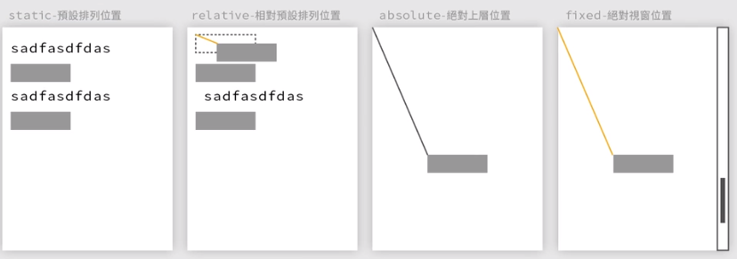

123123123
- 項目內容
- 項目內容
- 項目內容
- 項目內容
連結的文字

我是H1
我是H2
我是H3
我是H4
我是H5
我是H6
CSS範例：內外間距
SASS範例：從屬關係與HOVER
我是H1
我是H2
SASS範例：使用變數$
「$」可以寫單一樣式的變數， 變數可以設定在sass的前幾行，包含顏色、尺寸、特定內容
- $xxx: #fff，後續要帶入此顏色的地方都可以直接打上「$xxx」即可。
SASS範例：變數@mixin 基礎
「@mixin」寫模組化的class，後面加上「class名稱」，再寫上屬性，
使用時，用「+class名稱」，即可將該變數的屬性加入CSS任一屬性中。
SASS範例：變數模組@mixin 與預設值應用
「@mixin」，後面可加上「（$a, $b）」等變數，再將變數取代屬性的值，即視為該屬性的「預設值」。
套用時，直接在CSS屬性中，加入「+xxx(red, 70px)」，即等同於加上「color: red」與「width:70px」屬性。
(用變數@mixin模組加上紅色底與200px寬度設定)
CSS範例：偽元素 ::before與::after
用CSS塞入文字於HTML中
CSS範例：
1. attr，過濾HTML內容，HTML中的div有符合oooo=xxx者，都套用此樣式：div[oooo=xxx]
2. 根據HTML內容替換CSS內容，CSS中寫「attr=(ooo)」，表示自動於HTML偵測"ooo=xxx"，在CSS中等於「xxx」
原本HTML內容
原本HTML內容